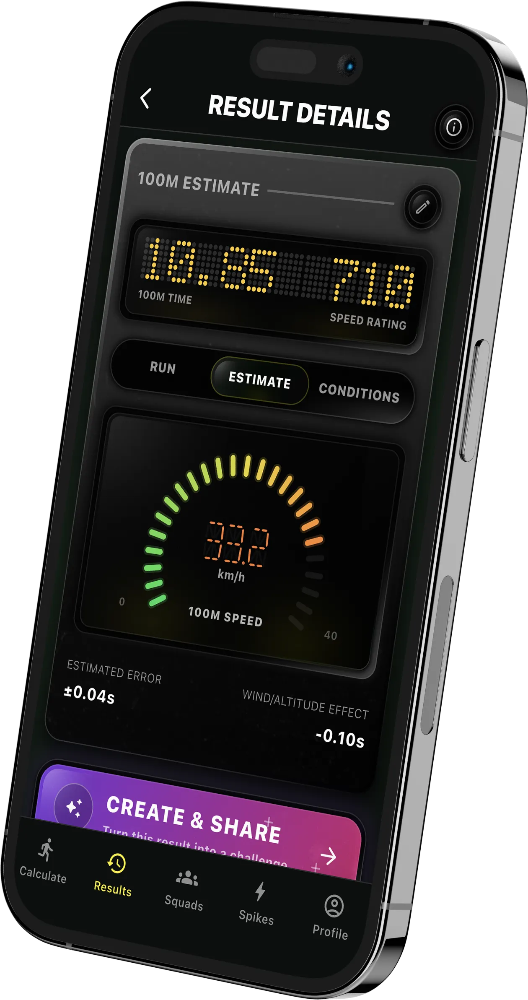
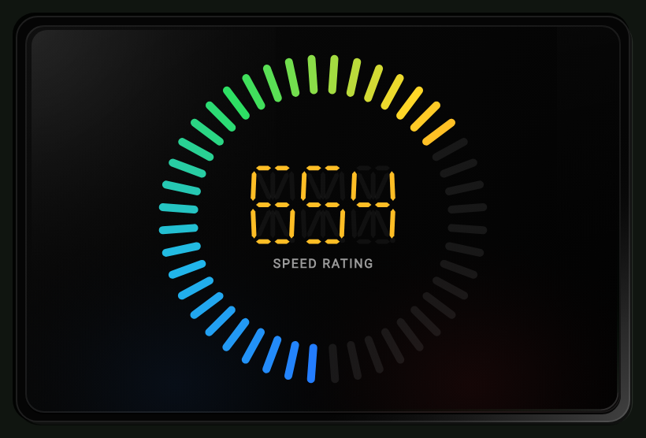

Converti un salto tematizzato
Inizia con la distanza e il tempo. Per ulteriori dettagli, aggiungi il tipo di partenza, il metodo di misurazione, la superficie, le scarpe, il vento o l'altitudine.
convertitore di tempo di sprint
Hai cronometrato uno sprint di 30 m, 60 m o su un’altra distanza? Inserisci distanza e tempo per stimare il tuo risultato sui 100 m. Aggiungi il tipo di partenza, il metodo di cronometraggio e la superficie per affinare la stima.
Nessun dispositivo necessario. Inizia con una distanza e un tempo.


Usa un'估计 di 100m per posizionare i salti più corti su una scala comune e traccia come le tue prestazioni cambiano nel tempo.
Inizia con la distanza e il tempo. Per ulteriori dettagli, aggiungi il tipo di partenza, il metodo di misurazione, la superficie, le scarpe, il vento o l'altitudine.
Trova la tua velocità media in miglia orarie o chilometri orari, poi inseriscila nel contesto con un punteggio di velocità, confronti aggiustati per l'età, e risultati condivisibili.
Recruti atleti, forma la tua squadra di relays, sviluppa le tue capacità, segui i tuoi personal best, sali nei leaderboards e raccogli le medaglie lungo la strada.
Aggiungi la distanza e il tempo che hai registrato. Usa il modo semplice per una stima rapida.
In modalità dettagliata, indica all'app come hai avuto il via e come è stato attivato il cronometro. Un via a volo ti dà un avvicinamento, mentre una via fissa include l'accelerazione da fermo.
Usa la stima per confrontare i salti di distanza e traccia il tuo progresso.

Esempio: 60 m in 7,50 secondi danno una stima di 11,64 secondi sui 100 m.
Nella modalità «Track Meet» dell’app, seleziona «Male» e inserisci 60 m e 7,50 secondi. Imposta partenza dai blocchi, cronometraggio elettronico, scarpe chiodate, pista sintetica asciutta e vento assente. Lascia vuoti età e altitudine.
Il tempo di 11,64 secondi è una proiezione. Per ottenere un tempo ufficiale sui 100 m occorre una gara di 100 m cronometrata.



Un modo per usarlo
Uno sprint di 40 iarde in 4,50 secondi corrisponde a una media di 18,2 mph (29,3 km/h) sull’intera distanza. Usa la modalità 40 iarde dell’app per ottenere una stima sui 100 m che tenga conto del metodo di cronometraggio e delle condizioni.


Condividi la tua scorsa
Salva il risultato del tuo sprint come adesivo trasparente e sovrapponilo a una tua foto o a un tuo video. Poi condividilo in una storia di Instagram o pubblicalo su TikTok. Puoi anche salvare il risultato in un video separato.

Gara di squadra
Raccogli una squadra di relays con competenze complementari. Gestisci la forma, affina i cambi di relays, gestisci le condizioni della gara e scopri se le tue quattro possono dare il meglio quando è il momento giusto.
Pronto quando sei tu
Porta la distanza e il tempo della tua prossima sprint.